psi-slides · back to the front page · Diese Seite auf Deutsch
A slide is a frame
Most slides in a lecture are a column of text, and that is right. The ones that are not – the title slide, the divider that opens a part, a row of cards, a photograph the words stand on – are what this page is about.
Nothing here is drawn. A composition takes one word in the
frontmatter – the settings block at the top of the file – or one
::: line in the body. There is no canvas, no second file to
keep in step, and no box to drag – so a slide that was rewritten the
night before still lays out.
A lecture that ignores this page builds exactly as it did before – the same four files, byte for byte. And a construction comes off again: delete the line that asked for one and the slide is back the way it was before you wrote it. The words stay where they are; the construction goes around them, one slide at a time.
These are newer than the format promise. Both ways of
getting psi-slides build them – the app and the sources alike –
but they came after 1.0.0 froze the source format, so a lecture naming a
cover:, a ::: dock or any of the rest may need an
edit when they reach a release of their own.
Getting started says what that
covers and what it does not.
Ten ways to open a lecture
A lecture can open on a title in the corner, on a wall of
colour, or on a photograph with the words standing over it.
You name the one you want in the frontmatter, with cover:. The ten below run
quiet to loud rather than alphabetically, because loud or quiet is the
question you answer when you pick one.
Three of them, in that order. classic is the
default, and a lecture that does not name one gets it.
classic the type in the lower left thirdpanel pale type on a full field of the accent colourhero a picture fills the slide, the type over a dark gradientThe other seven, and the two settings that move the type
Four of the ten take a picture: split and
hero from cover-image:, beside and
above from whatever the title slide itself carries, so a
figure written in the lecture can be the cover picture. Two more settings move the
type rather than replacing the composition – with
cover-align: you set it high, in the middle or low on the
seven that leave it any freedom, and with cover-ratio: you
say how much of the slide the picture gets on the ones that divide
it.
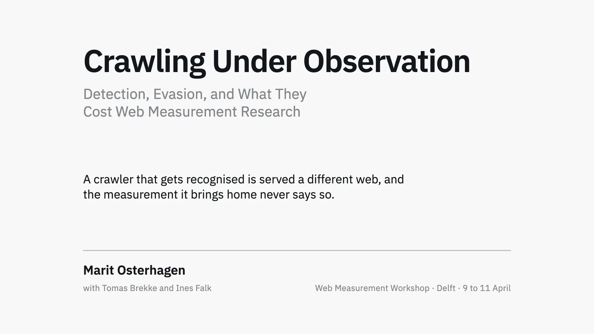
masthead the title at the top edge, credits under a rule at the foot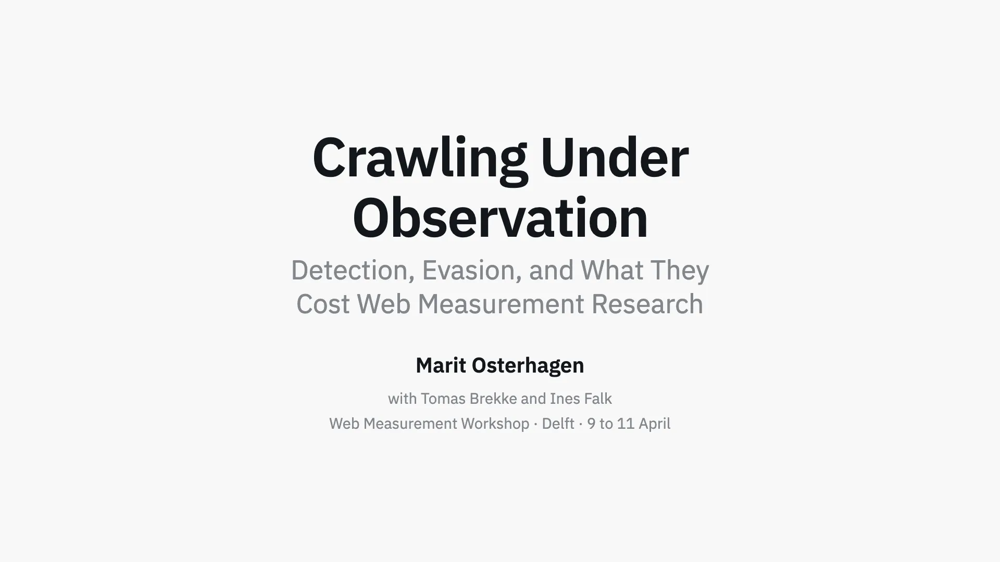
stack centred on both axes, for an opening that wants to be stilldisplay the title large enough to fill the slide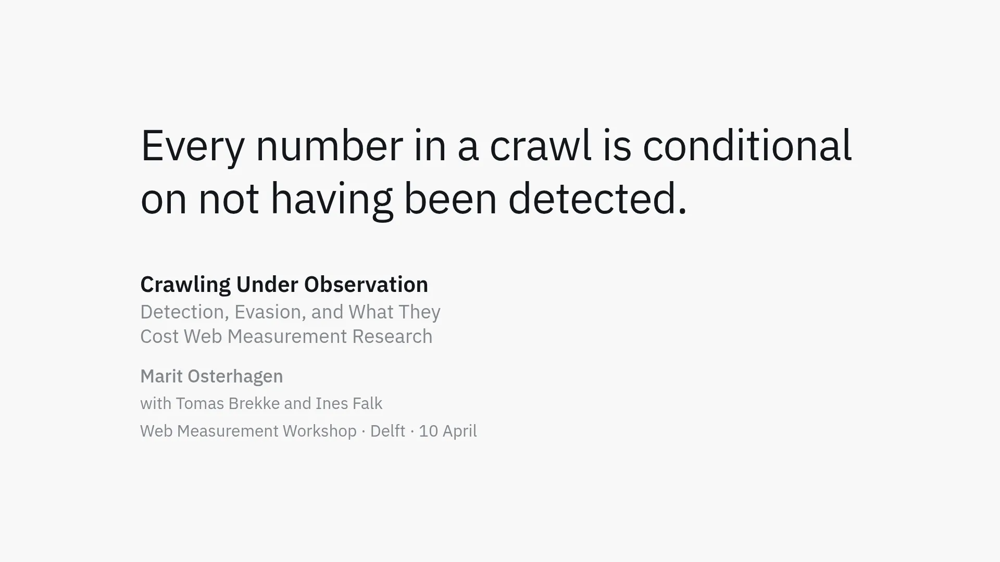
quote the talk opens on a claim; the title reads as the attributionsplit the type on the left, a picture running off the right edge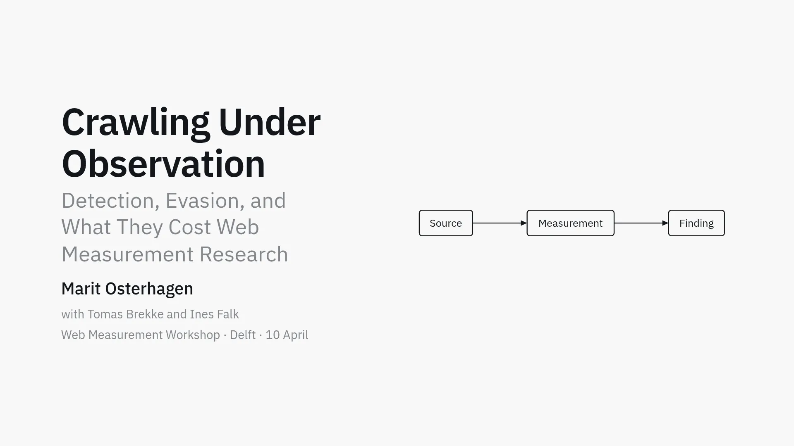
beside the slide’s own content beside the title, so a drawing can be the cover pictureabove the same content on top, the title centred below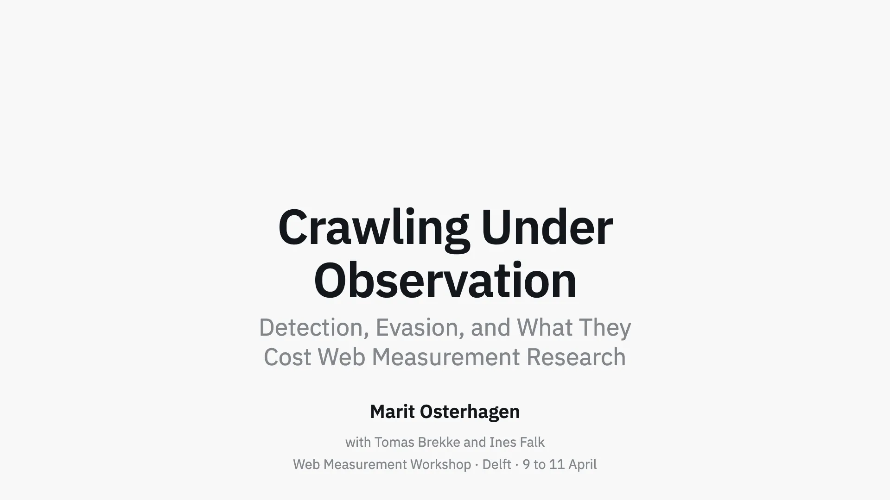
cover-align: bottom the same stack, with the type at the footThe last slide is the cover’s bookend. A slide
written as ## closing: is drawn in whatever composition you
named with cover:, so the hour ends on the shape it began
with. It carries your own words and neither the presenter line nor the date: those
say who is talking and when, and the room learned that an hour ago.
The six compositions with no picture can still have one.
A backdrop goes behind any slide, the title slide
included, and it wins over whatever the composition would have drawn there.
On panel the two make something neither has alone: the field
of accent becomes the veil, and the photograph reads through a plate of
colour.
The slide that opens a part
You start a new part with a # heading in the
source, and the lecture puts a divider in front of it so the room arrives at
the heading before the first slide of the part. You name one of six
compositions with section:, and they stay quieter than the cover:
a divider that can be mistaken for it has failed at its one job.
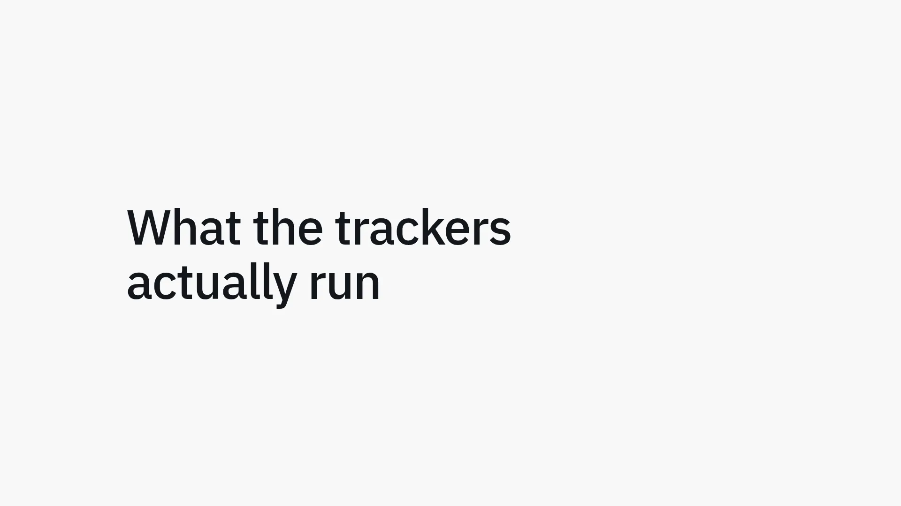
plain the heading alone. The default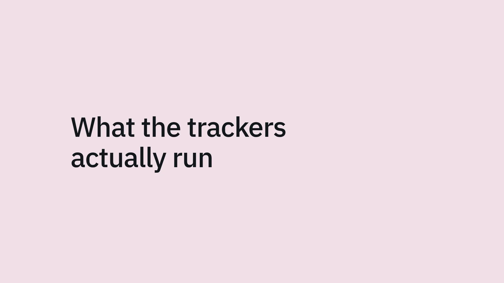
tinted the accent at 12%. From the back of a room the colour arrives before any word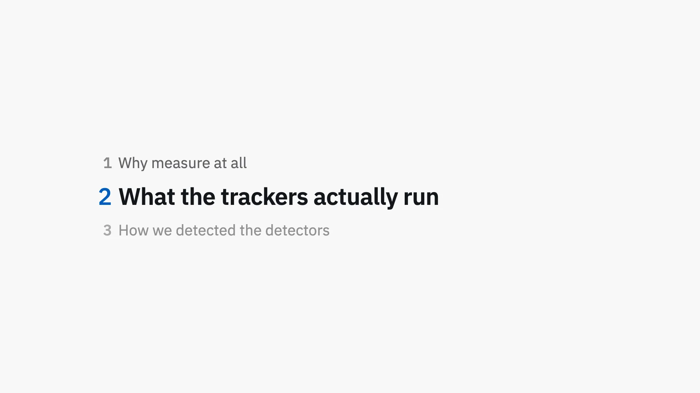
outline the running agenda: which part, out of how many, and how far inrule the quietest, and one that survives a black-and-white print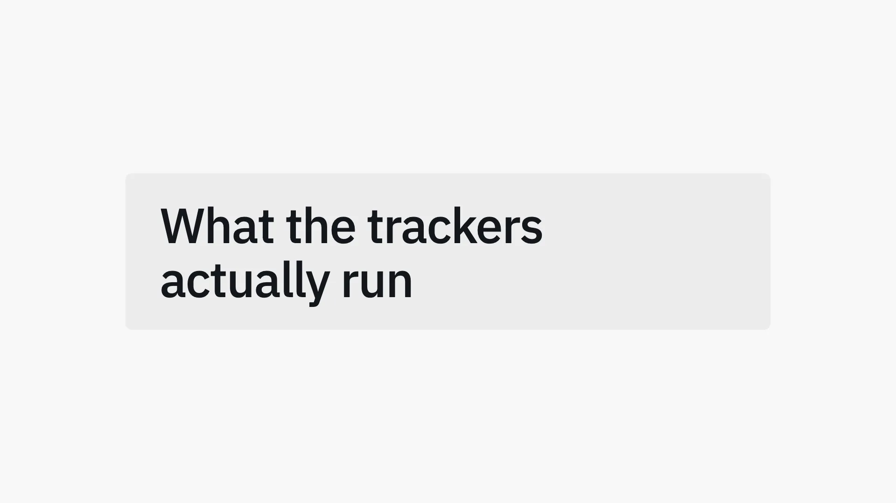
card the heading on a tinted panel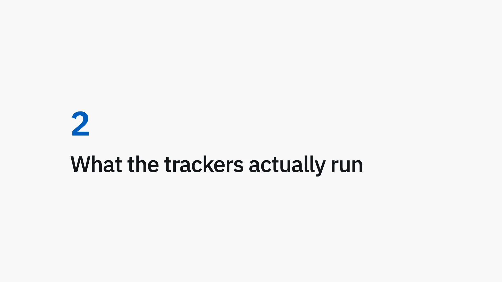
number a large numeral above the heading, counting the partsA divider can carry its own slide. Whatever you write
between the # heading and the first slide under it is on that
slide, and it used to be dropped without a word. A quotation, a photograph,
a figure or a row of three names: the part opens on it, and it needs no
directive of its own.
The running agenda is also a slide you can write.
Write ## outline: where you want it and you get the same list
as the outline divider – usually straight after the cover, where
there is no part boundary for a divider to be generated at. Before the
first part nothing in it is marked as current, because a plan nobody has
started is read at full strength.
Boxes, not columns
Three boxes side by side are containers, not columns: what
you write in one stays in it. Cards for three things, then, and
::: cols for the one long argument a browser may break wherever
it likes.
Two arrangements of one vocabulary, and you pick which with the word after the colons. The settings are the same either way: the size, the alignment, and what the box is made of.
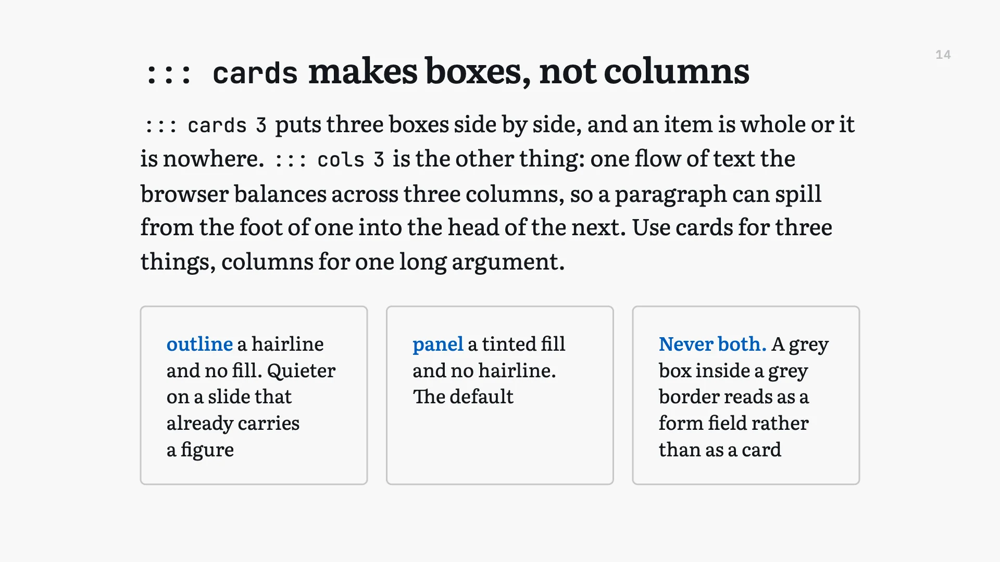
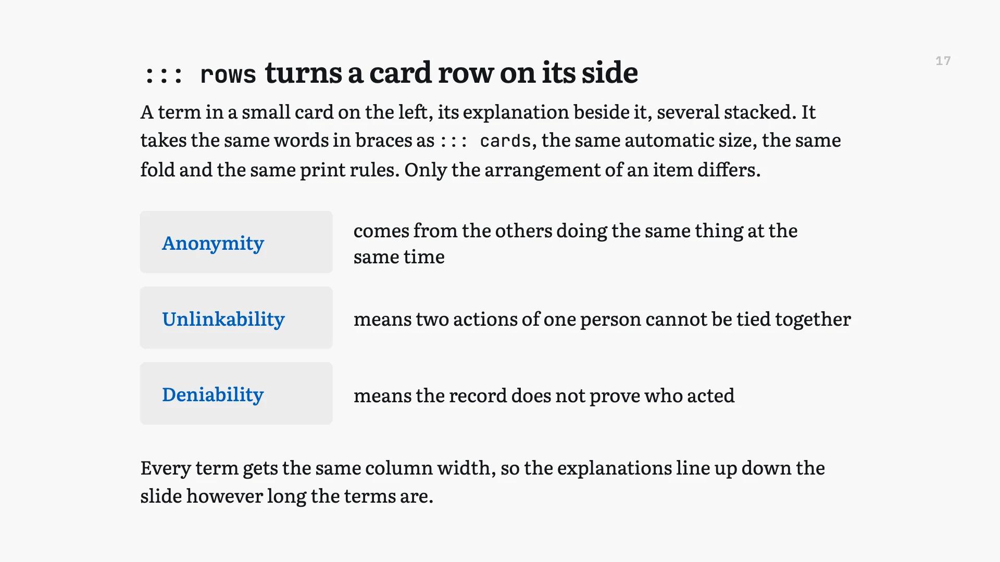
One row can serve the slide and the hand-out. What you write under a card at a second level is off the projection and in the printed document, so the room gets the headline and the reader gets the detail. Press C and the levels come back onto the wall when a question needs them, without writing it twice.
What a card sits on takes one word. A tinted fill, a hairline outline, the accent colour with pale type on it, the page colour, no box at all, or a picture as the card’s own ground. Never a fill and a hairline together: a grey box inside a grey border reads as a form field rather than as a card.
A picture behind the whole slide
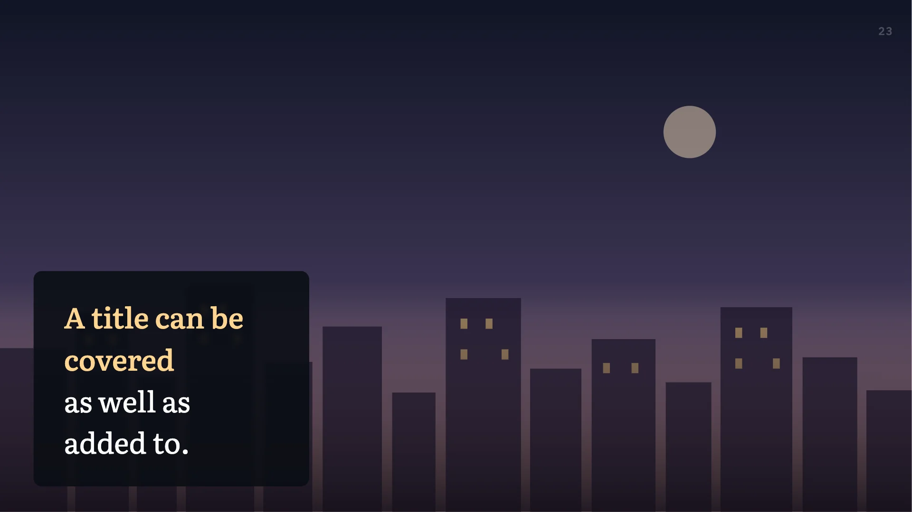
Write ::: backdrop and an image stands behind
everything, edge to edge, on any slide. One line, and the text column stays
where it is.
A veil in the theme’s own background colour goes over it by default, so ordinary text stays legible over the picture in any of the seven themes.
Write reveal after it and each press of
Space changes how much of the picture shows: a band along one
edge, the whole slide, or none of it. What moves is the opening, not the
photograph – so it opens over the slide rather than sliding about
behind it.
Over the slide, or part of the frame
An overlay lies over the slide and takes nothing from it. A dock is part of the frame, and the text column yields to it. That is the whole difference; the settings you write are the same for both.
Both take an edge, a ground and a width, and both can be held back until a later press of Space.
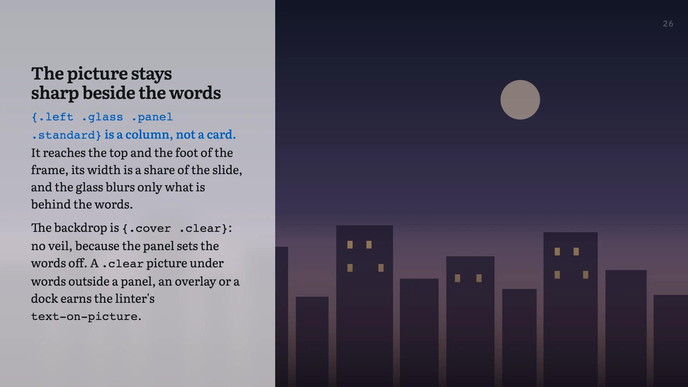
.panel makes it a column the full
height, a band the full width, or the whole frame. The picture underneath
is untouched.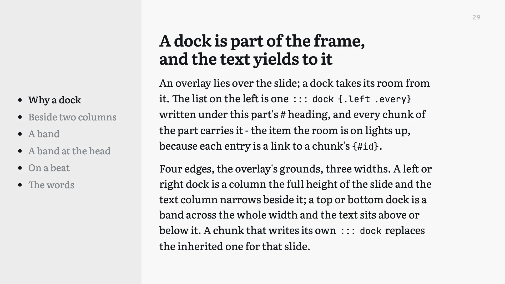
One dock can belong to a whole part. Written under a
# heading with .every, it is on every slide of
that part, and a slide that writes its own replaces it for that slide only.
That is how the standing list in the picture gets there: once, not
twenty-eight times.
A link in a dock is a live marker. Each item points at one slide by name, and the item for the slide the room is on lights up while the rest step back. An item naming nothing fails the build rather than sitting there dead, which is what a hand-kept list does on the third rewrite.
Where to read further
- The decoration lecture Every construction on this page, on the slide that describes it, in a lecture you can walk through. Its printed document is the same source as the hand-out.
- What psi-slides is The front page: one lecture as the room sees it and as the reader gets it, and why those are the same file.
- In the room The hour from behind the laptop: the cockpit, the beats, and what you press when a room goes quiet.
- Figures you write The case for the figure language, and the manual beside it, which builds one a line at a time and lists every statement.